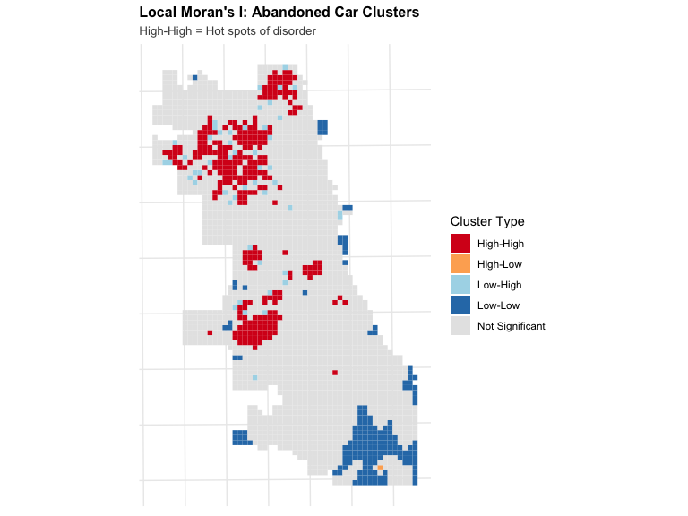

# Typical pattern for crime data
ggplot(fishnet, aes(x = countBurglaries)) +
geom_histogram(binwidth = 1, fill = "#440154FF", color = "white") +
labs(
title = "Distribution of Burglary Counts",
subtitle = "Most cells have 0-2 burglaries, few have many",
x = "Burglaries per Cell",
y = "Number of Cells"
) +
theme_minimal()Critical Perspectives on Predictive Policing
Week 9: MUSA 5080 - Dirty Data, Bad Predictions, and the Ethics of Crime Forecasting
Dr. Elizabeth Delmelle
2025-11-03
Modified Schedule - Dr. Delmelle at CPLN Virtual Open House until ~ 10:30AM
10:15 - 10:30AM (15 min) - Watch Video for Introduction to Today’s Topic: *
10:30 - 11:15 Small Group Discussion (at tables):
The Richardson et al. paper (posted on canvas) describes ‘dirty data’ in 13 police departments that used predictive policing.
The main points are summarized in these slides, but let’s make this learning more active.
At your table, discuss:
- What is ‘dirty data’ and how does it get created?
- Pick ONE of the city case studies (Chicago, New Orleans, Maricopa County..) and identify 2-3 key concerns - what went wrong?
- What is a consent decree in the context of predictive policing? Does it solve the problems?
Opening Thought
Before we discuss HOW to build predictive policing systems, we need to ask: SHOULD we?
“A statistically ‘good’ model can still be socially harmful.”
- Richardson, Schultz & Crawford (2019)
Today’s Critical Questions
Technical Questions:
- How do we model crime counts?
- What spatial features predict crime?
- How do we validate predictions?
- Can we outperform baseline methods?
Critical Questions:
- Whose data? Whose crimes?
- What if the data is “dirty”?
- Who benefits? Who is harmed?
- What feedback loops are created?
- Can technical solutions fix social problems?
Today’s Approach
We will learn the technical methods AND critically interrogate their use. Both skills are essential for ethical data science.
Part 1: The Seductive Promise of Predictive Policing
The Sales Pitch
What vendors and police departments claim:
- Efficiency: “Deploy limited resources where they’re needed most”
- Objectivity: “Remove human bias from decision-making”
- Proactivity: “Prevent crime before it happens”
- Data-driven: “Let the data tell us where crime will occur”
Sounds great, right?
But these claims rest on critical assumptions:
- That crime data accurately reflects crime (it doesn’t)
- That past patterns predict future crime (they might just predict policing)
- That we can separate “good” from “bad” data (we often can’t)
- That technical solutions can fix social problems (they can’t)
The Technical Evolution
| Generation | Method | Data Used | Example |
|---|---|---|---|
| 1st: Hotspots | Kernel Density | Past crime locations | KDE maps |
| 2nd: Risk Terrain | Logistic Reg. | Crime + features | RTM software |
| 3rd: ML | Random Forest, Neural Nets | Everything | PredPol, Palantir |
| 4th: Person-Based | Network analysis | Social connections | Strategic Subject List |
Each generation claims to be more “objective” and “accurate”
But what if they’re all built on the same flawed foundation?
Part 2: The Dirty Data Problem
What Is “Dirty Data”?
Traditional definition (data mining):
- Missing data
- Incorrect data
- Non-standardized formats
Extended definition (Richardson et al. 2019):
“Data derived from or influenced by corrupt, biased, and unlawful practices, including data that has been intentionally manipulated or ‘juked,’ as well as data that is distorted by individual and societal biases.”
The Many Forms of Dirty Data
1. Fabricated/Manipulated Data
- False arrests (planted evidence)
- Downgraded crime classifications to “juke the stats”
- Pressuring victims not to file reports
2. Systematically Biased Data
- Over-policing of certain communities → more recorded “crime”
- Under-policing of white-collar crime → appears less common
- Racial profiling → disproportionate stops/arrests
3. Missing/Incomplete Data
- Unreported crimes (especially in over-policed areas with low police trust)
- Ignored complaints
- Incomplete records
4. Proxy Problems
- Arrests ≠ crimes committed
- Calls for service ≠ actual need
- Gang database ≠ actual gang membership
Case Study 1: “Juking the Stats” - The Wire and Baltimore
From TV to Reality:
The Wire (2004): “If the crime rate doesn’t fall, you most certainly will”
Baltimore Reality (2008-2018):
- 14,000+ serious assaults misrecorded as minor offenses
- Extensive Gun Trace Task Force corruption
- Officers robbing residents, planting evidence
- False arrests, fabricated reports
- Data manipulation to show “success”
Result: 55+ potential lawsuits, thousands of convictions questioned
Question: What happens when this data trains a predictive algorithm?
Case Study 2: CompStat and NYPD
The Promise: Data-driven accountability, crime reduction
The Reality Revealed:
- 100+ retired NYPD captains surveyed: Intense pressure led to stat manipulation
- Serious crimes downgraded to meet targets
- Officers planting drugs to meet arrest quotas
- Commanders persuading victims not to file reports
The Dual Strategy:
- Downgrade serious crimes (reported to FBI) → claim success
- Increase minor arrests (stops, summonses) → show “control”
2013: Independent audit confirmed systematic data problems
The Feedback Loop Diagram
The Confirmation Bias Loop:
- Algorithm learns: “Crime happens in neighborhood X”
- Police sent to neighborhood X
- More arrests in neighborhood X (regardless of actual crime)
- Algorithm “confirmed”: “We were right about neighborhood X!”
- Cycle intensifies
Part 3: Technical Fixes Can’t Solve Social Problems
Vendor Claims About Bias Mitigation
PredPol claims:
“Uses ONLY 3 data points—crime type, crime location, and crime date/time”
HunchLab claims:
“We would not use data that relates people to predict places—no arrests, no social media, no gang status”
Both exclude: Arrest data, stop data, traffic stops
Both include: Crime reports, calls for service
Why “Cleaning” The Data Isn’t Enough
Problem 1: Crime reports reflect police decisions
- Officer decides what to investigate
- Officer decides what to classify as “crime”
- Officer decides what to document
Problem 2: Calls for service reflect community bias
- Neighbors calling police on Black people barbecuing
- “Suspicious activity” = person of color in “wrong” neighborhood
- Gentrification → increased 311 calls on existing residents
Problem 3: What counts as “clean” data?
- If drug arrests are racially biased, exclude them ✓
- But isn’t burglary enforcement also biased? What about assault?
- Where do you draw the line?
The Impossibility of Neutral Crime Data
Crime data is ALWAYS:
- Socially constructed - Societies define what counts as “crime”
- Selectively enforced - More resources to some neighborhoods
- Organizationally filtered - Police priorities, department culture
- Politically shaped - “Tough on crime” eras, moral panics
- Technically mediated - 911 systems, CAD software, databases
There is no “view from nowhere”
Crime data doesn’t reveal “crime” - it reveals policing patterns
Comparison: What Gets Policed vs. What Gets Committed
| Type | Frequency | Policing Intensity | In Predictive Models? |
|---|---|---|---|
| Violent Crime | Moderate | High | ✓ Yes |
| Property Crime | High | High | ✓ Yes |
| Drug Offenses | Very High | Racially Disparate | Some exclude |
| White-Collar Crime | Very High | Very Low | ✗ Rarely |
| Wage Theft | Exceeds all robbery | Almost None | ✗ Never |
| Corporate Fraud | $300B+ annually | Minimal | ✗ Never |
Question: What would predictive policing look like if we predicted white-collar crime with the same intensity?
See: White Collar Crime Risk Zones - A satirical map
The “Missing” Data Problem
What crime data DOESN’T capture:
- Less than half of violent crimes reported to police (DOJ estimates)
- Even fewer property crimes reported
- Groups with less favorable views of police less likely to report
- Crimes in areas with low police presence go unrecorded
Example - LAPD 2005-2012:
- 14,000 serious assaults misclassified as minor offenses
- Error not discovered until 2015
- LAPD already working with PredPol by then
- Was this data used? No evidence either way.
If you can’t trust the labels, you can’t trust the model.
Part 4: Consequences and Harms
Who Bears the Costs?
False Positives (Predicted High Risk, No Crime Occurs)
Cost to individuals:
- Increased police presence/harassment
- Stops, searches without cause
- Trauma, stress
- Missed opportunities (late to work, etc.)
- Normalized surveillance
Cost to communities:
- Broken trust with police
- Reduced reporting of actual crimes
- Economic harm (businesses avoid area)
- Quality of life degradation
False Negatives (Predicted Low Risk, Crime Occurs)
Cost to individuals:
- Inadequate police response
- Victimization
- Property loss
- Safety concerns
Cost to communities:
- Unequal protection
- Perception of being “written off”
- Actual under-policing
Who experiences each?
- FP: Predominantly Black/Brown communities
- FN: Also often Black/Brown communities (just different ones)
Part 5: Can Reform Work?
What Consent Decrees Cover (And Don’t Cover)
Typical Reforms Required:
- Training on constitutional policing
- Early intervention systems for problem officers
- Revised use-of-force policies
- Community oversight
- Data collection improvements
What They DON’T Typically Address:
- Historical data generated during unconstitutional periods
- Ongoing use of that data in algorithms
- Data sharing with other jurisdictions
- Vendor accountability for bias mitigation
- Public transparency about predictive systems
The Chicago Consent Decree (2019)
What it includes:
- CPD must collect better data
- Community oversight board
- Constitutional policing training
- Use of force reforms
What community organizations noted is MISSING:
- No restrictions on use of SSL
- No prohibition on using data from 2011-2017 (period of documented violations)
- No requirements for predictive policing oversight
- Limited transparency about algorithms
In 2019: CPD contracted with UChicago Crime Lab to “update” predictive approaches
Question: Using which data?
Part 6: A Framework for Critical Evaluation
Questions to Ask About Any Predictive Policing System
1. Data Provenance
- What time period does training data cover?
- Were there civil rights investigations during that period?
- Were there documented cases of data manipulation?
- What evidence exists that data is accurate?
2. Variable Selection
- What specific variables are used?
- How might each variable embed bias?
- What’s excluded and why?
- Who made these choices?
Questions (Continued)
3. Validation
- How is accuracy measured?
- What counts as “success”?
- Are error rates reported by neighborhood?
- Who experiences false positives vs. false negatives?
4. Deployment
- How do predictions translate to action?
- What discretion do officers have?
- Are social services actually offered?
- What are the measurable outcomes?
Questions (Continued)
5. Transparency & Accountability
- Is the methodology public?
- Can community members access their own “risk scores”?
- Is there a process to challenge predictions?
- Who monitors for disparate impact?
6. Alternatives
- What non-punitive interventions were considered?
- Could these resources address root causes instead?
- What would actual community safety investment look like?
The Fundamental Question
Before Asking “Does It Work?”, Ask:
“Should we be doing this at all?”
Consider:
- A system that accurately predicts where over-policing will occur is “accurate”
- A system that reinforces existing inequalities can be “validated”
- A system that efficiently targets marginalized communities is “effective”
But:
- Is it just?
- Is it equitable?
- Does it make communities safer?
- Does it address root causes?
- Or does it just manage inequality more efficiently?
Technical Foundations
Before we build the model, we need to understand the methods
Modeling Workflow
1 Setup & Data Preparation
- Load burglaries (point data)
- Load abandoned cars (311 calls)
- Create fishnet (500m × 500m grid)
- Aggregate burglaries to cells
2 Baseline Comparison
- Kernel Density Estimation (KDE)
- Simple spatial smoothing
- What we need to beat!
3 Feature Engineering
Using Abandoned Cars as “Disorder Indicator”:
- Count in each cell
- k-Nearest Neighbors (mean distance to 3 nearest)
- LISA (Local Moran’s I - identify hot spots)
- Distance to hot spots (significant clusters)
4 Count Regression Models
- Fit Poisson regression
- Test for overdispersion
- Fit Negative Binomial (if needed)
- Interpret coefficients
5 Spatial Cross-Validation
- Leave-One-Group-Out (LOGO)
- Train on n-1 districts
- Test on held-out district
- Calculate MAE/RMSE
6 Model Comparison
- Compare to KDE baseline
- Map predictions vs. actual
- Analyze errors spatially
The Core Logic: “Broken Windows Theory”
Our Modeling Approach
Hypothesis: Signs of disorder (abandoned cars) predict property crime (burglaries)
Why different spatial measures?
- Count → How much disorder is HERE?
- k-NN Distance → How CLOSE are we to disorder?
- Hot Spots (LISA) → Where does disorder CLUSTER?
- Distance to Hot Spots → How close to concentrated disorder?
Each captures a different aspect of spatial proximity to our indicator variable.
Warning
Does this actually predict crime? Or does it predict where certain communities call 311?
What assumptions are embedded in using “disorder” as a predictor?
Part 7A: Understanding Local Spatial Autocorrelation
Global vs. Local Spatial Autocorrelation
Global Measures
Moran’s I (one value for entire study area)
Question answered: “Is there spatial clustering overall?”
Range:
- -1 to +1
- +1: Perfect positive clustering
- 0: Random spatial pattern
- -1: Perfect dispersion
Limitation: Doesn’t tell us WHERE clusters are
Example: “Chicago burglaries show positive spatial autocorrelation (I = 0.65)”
Local Measures
Local Moran’s I (one value per location)
Question answered: “Where are the clusters? Which specific locations?”
For each location:
- Is it part of a cluster?
- What type of cluster?
- Is it statistically significant?
Advantage: Maps showing WHERE patterns exist
Example: “South Side shows significant High-High clustering”
Spatial Weights Matrix: The Foundation
Before calculating spatial autocorrelation, we need to define “neighbors”
Spatial weights matrix (W):
- \(w_{ij}\) = weight between locations \(i\) and \(j\)
- If \(i\) and \(j\) are neighbors: \(w_{ij} > 0\)
- If not neighbors: \(w_{ij} = 0\)
Common approaches:
- Contiguity: Share a border? (Queen vs. Rook)
- Distance: Within threshold distance?
- K-nearest neighbors: Closest k locations
Spatial Weights: Contiguity
Queen Contiguity: Neighbors share edge OR vertex (corner)
[A][B][C]
[D][E][F]
[G][H][I]Cell E’s Queen neighbors: B, D, F, H (edges) + A, C, G, I (corners) = 8 neighbors
Rook Contiguity: Neighbors share only edges
Cell E’s Rook neighbors: B, D, F, H = 4 neighbors
Our fishnet grid uses Queen contiguity (most common for regular grids)
Spatial Weights: Row Standardization
Raw weights: Binary (0 or 1)
Problem: Corner cells have fewer neighbors than interior cells
Solution: Row standardization (“W” style)
\[w^*_{ij} = \frac{w_{ij}}{\sum_j w_{ij}}\]
Effect: Each row sums to 1
Example:
- Cell with 4 neighbors: each gets weight 0.25
- Cell with 8 neighbors: each gets weight 0.125
Why? Makes cells comparable regardless of number of neighbors
Global Moran’s I Formula
\[I = \frac{n}{\sum_i \sum_j w_{ij}} \cdot \frac{\sum_i \sum_j w_{ij}(Y_i - \bar{Y})(Y_j - \bar{Y})}{\sum_i (Y_i - \bar{Y})^2}\]
Where:
- \(n\) = number of locations
- \(Y_i\) = value at location \(i\) (e.g., burglary count)
- \(\bar{Y}\) = mean value
- \(w_{ij}\) = spatial weight between \(i\) and \(j\)
Interpretation:
- Positive I: Similar values cluster (high near high, low near low)
- Negative I: Dissimilar values adjacent (high near low)
- Zero: Random spatial pattern
Local Moran’s I Formula
\[I_i = \frac{(Y_i - \bar{Y})}{\sum_j (Y_j - \bar{Y})^2 / n} \sum_j w_{ij}(Y_j - \bar{Y})\]
For each location \(i\):
Numerator: How different is location \(i\) from mean?
Denominator: Variance of all locations
Weight: How different are neighbors from mean?
Result: Local statistic for each location
Critical: Must test for statistical significance!
The Moran Scatterplot
Visualizes relationship between:
- X-axis: Standardized value at location \(i\)
- Y-axis: Spatial lag (weighted average of neighbors)
Quadrant II | Quadrant I
(Low-High) | (High-High)
Outliers | HOTSPOTS
|
--------------------|--------------------
|
Quadrant III | Quadrant IV
(Low-Low) | (High-Low)
COLDSPOTS | OutliersInterpretation:
- Quadrant I (High-High): High crime surrounded by high crime → Hotspot
- Quadrant II (Low-High): Low crime in high crime area → Outlier
- Quadrant III (Low-Low): Low crime surrounded by low crime → Coldspot
- Quadrant IV (High-Low): High crime in low crime area → Outlier

High-Low Cluster of Halloween Enthusiasm
Statistical Significance Testing
Problem: Not all clusters are “real” - could be random chance
Solution: Permutation test
Process:
- Calculate observed \(I_i\) for location \(i\)
- Randomly shuffle values across locations (999 times)
- Recalculate \(I_i\) for each permutation
- Compare observed vs. distribution of permuted values
- If observed is extreme → statistically significant (p < 0.05)
Result: Only report clusters that are unlikely to occur by chance
Four Types of Significant Clusters
| Type | Z-score | Location Value | Neighbor Values | Interpretation |
|---|---|---|---|---|
| High-High | Positive | Above mean | Above mean | Hotspot |
| Low-Low | Positive | Below mean | Below mean | Coldspot |
| High-Low | Negative | Above mean | Below mean | Outlier (isolated high) |
| Low-High | Negative | Below mean | Above mean | Outlier (isolated low) |
Local Moran’s I in R: Step by Step
library(spdep)
# Step 1: Create spatial object
fishnet_sp <- as_Spatial(fishnet)
# Step 2: Define neighbors (Queen contiguity)
neighbors <- poly2nb(fishnet_sp, queen = TRUE)
# Step 3: Create spatial weights (row-standardized)
weights <- nb2listw(neighbors, style = "W", zero.policy = TRUE)
# Step 4: Calculate Local Moran's I
local_moran <- localmoran(
fishnet$abandoned_cars, # Variable of interest
weights, # Spatial weights
zero.policy = TRUE # Handle cells with no neighbors
)
# Step 5: Extract components
fishnet$local_I <- local_moran[, "Ii"] # Local I statistic
fishnet$p_value <- local_moran[, "Pr(z != E(Ii))"] # P-value
fishnet$z_score <- local_moran[, "Z.Ii"] # Z-scoreIdentifying High-High Clusters (Hotspots)
# Standardize the variable for quadrant classification
fishnet$standardized_value <- scale(fishnet$abandoned_cars)
# Calculate spatial lag (weighted mean of neighbors)
fishnet$spatial_lag <- lag.listw(weights, fishnet$abandoned_cars)
fishnet$standardized_lag <- scale(fishnet$spatial_lag)
# Identify High-High clusters
fishnet$hotspot <- 0 # Default: not a hotspot
# Criteria:
# 1. Value above mean (standardized > 0)
# 2. Neighbors above mean (spatial lag > 0)
# 3. Statistically significant (p < 0.05)
fishnet$hotspot[
fishnet$standardized_value > 0 &
fishnet$standardized_lag > 0 &
fishnet$p_value < 0.05
] <- 1
# Count hotspots
sum(fishnet$hotspot)Hotspot Map
Critical Interpretation of Hotspots
What you’ve identified:
Statistically significant clusters of high abandoned car reports
What this MIGHT mean:
- Actual concentrations of abandoned cars
- Areas where residents report more (higher civic engagement?)
- Areas with more 311 system awareness
- Areas with more code enforcement presence
- Gentrifying areas with new residents calling on existing conditions
Critical question:
Are these “high abandoned car” areas or “high reporting” areas?
For modeling:
We’re using this as a proxy for “disorder” but recognize it’s a flawed proxy
Part 7B: Count Regression Fundamentals
Why Count Regression? The Problem with OLS
Our outcome: Burglary counts per grid cell (0, 1, 2, 3, …)
Linear regression assumes:
\[Y_i = \beta_0 + \beta_1 X_{1i} + \beta_2 X_{2i} + \varepsilon_i\]
where \(\varepsilon_i \sim N(0, \sigma^2)\)
Problems for counts:
- Can predict negative values (impossible for counts)
- Assumes constant variance (counts often have variance ≠ mean)
- Assumes continuous outcome (counts are discrete)
- Assumes normal errors (count data is skewed)
Distribution of Crime Counts
Characteristics:
- Right-skewed: Long tail to the right
- Many zeros: Most cells have no burglaries
- Discrete: Only integer values
- Variance > Mean: Overdispersion common
The Poisson Distribution
Appropriate for count data:
\[P(Y = k) = \frac{\lambda^k e^{-\lambda}}{k!}\]
Where:
- \(Y\) = count outcome (0, 1, 2, …)
- \(\lambda\) = expected count (mean = variance)
- \(k\) = observed count
Key property: Mean = Variance = \(\lambda\)
Examples:
- Number of crimes per week
- Number of 911 calls per hour
- Number of accidents per intersection
Poisson Regression Model
Link \(\lambda\) to predictors via log link:
\[\log(\lambda_i) = \beta_0 + \beta_1 X_{1i} + \beta_2 X_{2i} + ... + \beta_p X_{pi}\]
Equivalently:
\[\lambda_i = \exp(\beta_0 + \beta_1 X_{1i} + \beta_2 X_{2i} + ... + \beta_p X_{pi})\]
Why log link?
- Ensures \(\lambda_i > 0\) (counts can’t be negative)
- Linear relationship on log scale
- Multiplicative effects on count scale
Interpreting Poisson Coefficients
On log scale:
\(\beta_1\) = change in log(expected count) per unit increase in \(X_1\)
On count scale (exponentiate):
\(\exp(\beta_1)\) = multiplicative effect on expected count
Examples:
| \(\beta\) | \(\exp(\beta)\) | Interpretation |
|---|---|---|
| 0.14 | 1.15 | 15% increase per unit of X |
| -0.22 | 0.80 | 20% decrease per unit of X |
| 0.00 | 1.00 | No effect |
| 0.69 | 2.00 | Doubling per unit of X |
Poisson Regression in R
# Fit Poisson model
model_poisson <- glm(
countBurglaries ~ Abandoned_Cars + Abandoned_Cars.nn + abandoned.isSig.dist,
data = fishnet,
family = poisson(link = "log")
)
# View results
summary(model_poisson)
# Exponentiate coefficients for interpretation
exp(coef(model_poisson))
# Example output:
# exp(coef)
# (Intercept) 0.234
# Abandoned_Cars 1.151
# Abandoned_Cars.nn 0.998
# abandoned.isSig.dist 0.999
# Interpretation:
# - Each additional abandoned car → 15.1% increase in expected burglaries
# - Each meter from nearest abandoned car → 0.2% decrease in expected burglariesThe Overdispersion Problem
Poisson assumption: Variance = Mean
Reality with crime data: Variance > Mean (often MUCH larger)
Why overdispersion occurs:
- Unobserved heterogeneity: Some areas have unmeasured crime attractors
- Contagion effects: One crime leads to others (not independent)
- Measurement error: Counting issues, data quality
- Model misspecification: Missing important variables
Check for overdispersion:
\[\text{Dispersion} = \frac{\text{Residual Deviance}}{\text{Degrees of Freedom}}\]
- If ≈ 1: Poisson is fine
- If > 1: Overdispersion (common!)
- If > 2-3: Serious overdispersion → Use Negative Binomial
Checking Overdispersion in R
# Fit Poisson model
model_pois <- glm(
countBurglaries ~ Abandoned_Cars + Abandoned_Cars.nn + abandoned.isSig.dist,
data = fishnet,
family = poisson
)
# Calculate dispersion parameter
dispersion <- sum(residuals(model_pois, type = "pearson")^2) /
model_pois$df.residual
cat("Dispersion parameter:", round(dispersion, 3), "\n")
# Rule of thumb:
# < 1.5: Poisson OK
# 1.5 - 3: Mild overdispersion, NegBin recommended
# > 3: Serious overdispersion, NegBin essential
# Example output:
# Dispersion parameter: 4.523
# Warning: Serious overdispersion detected!Negative Binomial Regression
Relaxes the variance = mean assumption
Adds dispersion parameter (\(\alpha\)):
\[\text{Var}(Y_i) = \mu_i + \alpha \mu_i^2\]
Where:
- \(\mu_i\) = expected count (same as Poisson)
- \(\alpha\) = dispersion parameter
If \(\alpha = 0\): Reduces to Poisson
If \(\alpha > 0\): Allows extra variance (overdispersion)
Interpretation: Coefficients interpreted same way as Poisson!
Negative Binomial in R
library(MASS)
# Fit Negative Binomial model
model_nb <- glm.nb(
countBurglaries ~ Abandoned_Cars + Abandoned_Cars.nn + abandoned.isSig.dist,
data = fishnet
)
# View results
summary(model_nb)
# Compare to Poisson
AIC(model_pois) # e.g., 8234.5
AIC(model_nb) # e.g., 6721.3
# Lower AIC = better fit
# If NegBin AIC much lower → use NegBin
# Extract dispersion parameter (theta)
model_nb$theta # e.g., 2.47
# Interpretation: Significant overdispersion confirmedComparing Poisson vs. Negative Binomial
| Aspect | Poisson | Negative Binomial |
|---|---|---|
| Variance assumption | Var = Mean | Var = μ + αμ² |
| Overdispersion | Cannot handle | Accommodates |
| Standard errors | Underestimated if overdispersed | Correctly estimated |
| When to use | Count data, no overdispersion | Count data with overdispersion |
| Crime data | Rarely appropriate | Usually better |
For today’s lab: We’ll fit both, compare, and use the better model
Model Diagnostics for Count Models
Unlike OLS, we don’t use residual plots the same way
Key diagnostics:
- Dispersion test (already covered)
- Deviance residuals: Should be roughly normal
- Pearson residuals: Check for outliers
- Cook’s distance: Influential observations
- Predicted vs. observed: Visual check
Part 7C: Spatial Features for Predictive Modeling
Why Add Spatial Features?
Basic model:
\[\log(\lambda_i) = \beta_0 + \beta_1 (\text{Abandoned Cars}_i)\]
Problem: Ignores spatial context
Enhanced model with spatial features:
\[\log(\lambda_i) = \beta_0 + \beta_1 (\text{Abandoned Cars}_i) + \beta_2 (\text{Distance to Nearest}_i) + \beta_3 (\text{Distance to Hotspot}_i)\]
Benefits:
- Captures spillover effects
- Accounts for spatial dependence
- Improves predictions
- More realistic model of spatial crime processes
Distance to Nearest Feature
Concept: Proximity matters for risk
Implementation: k-Nearest Neighbors (k=1)
For each grid cell:
- Find location of all abandoned cars
- Calculate distance to each
- Keep minimum distance
In R:
Distance to Hotspot
Two-step process:
Step 1: Identify hotspots (Local Moran’s I High-High clusters)
Step 2: Calculate distance from each cell to nearest hotspot
# Step 1: Identify hotspots (we did this earlier)
hotspot_cells <- filter(fishnet, hotspot == 1)
# Step 2: Calculate distances
hotspot_dist <- get.knnx(
data = st_coordinates(st_centroid(hotspot_cells)),
query = st_coordinates(st_centroid(fishnet)),
k = 1
)
fishnet$hotspot_nn <- hotspot_dist$nn.dist[, 1]Why useful? Captures multi-scale spatial dependence:
- Local (within cell)
- Neighborhood (distance to nearest)
- Regional (distance to hotspot cluster)
Visualizing Distance Features
# Create comparison maps
p1 <- ggplot(fishnet) +
geom_sf(aes(fill = abandoned_car_nn), color = NA) +
scale_fill_viridis_c(name = "Distance (m)", option = "plasma") +
labs(title = "Distance to Nearest Abandoned Car") +
theme_void()
p2 <- ggplot(fishnet) +
geom_sf(aes(fill = hotspot_nn), color = NA) +
scale_fill_viridis_c(name = "Distance (m)", option = "magma") +
labs(title = "Distance to Nearest Hotspot") +
theme_void()
grid.arrange(p1, p2, ncol = 2)Look for: Concentric patterns around features/hotspots
Part 7D: The Fishnet Grid Approach
Why Use a Fishnet Grid?
Problem: Crime is points, but we need areas for modeling
Options:
- Existing boundaries (census tracts, neighborhoods)
- Pro: Align with administrative data
- Con: Arbitrary, unequal sizes, Modifiable Areal Unit Problem
- Fishnet grid (regular cells)
- Pro: Consistent size, no boundary bias
- Con: Arbitrary, may split “natural” areas
We use fishnet because:
- Standard approach in predictive policing
- Easier spatial operations
- Consistent unit of analysis
Creating a Fishnet Grid
library(sf)
# Step 1: Define cell size (in map units - meters for our projection)
cell_size <- 500 # 500m x 500m cells
# Step 2: Create grid over study area
fishnet <- st_make_grid(
chicago_boundary,
cellsize = cell_size,
square = TRUE,
what = "polygons"
) %>%
st_sf() %>%
mutate(uniqueID = row_number())
# Step 3: Clip to study area (remove cells outside boundary)
fishnet <- fishnet[chicago_boundary, ]
# Check results
nrow(fishnet) # Number of cells
st_area(fishnet[1, ]) # Area of one cell (should be 250,000 m²)Grid Cell Size: A Critical Choice
Common sizes:
- 250m × 250m: Fine-grained, many cells, computationally intensive
- 500m × 500m: Standard, balance detail and computation
- 1000m × 1000m: Coarse, faster, loses local detail
Smaller cells:
- ✓ More spatial detail
- ✓ Better capture local patterns
- ✗ More zeros (sparse data)
- ✗ Computational cost
Larger cells:
- ✓ Fewer zeros
- ✓ More stable estimates
- ✗ Lose local variation
- ✗ May obscure hotspots
Choice affects results! No “correct” answer.
Aggregating Points to Grid
Process:
- Spatial join between crimes (points) and fishnet (polygons)
- Count crimes per cell
- Handle cells with zero crimes
# Count burglaries per cell
burglary_counts <- st_join(burglaries, fishnet) %>%
st_drop_geometry() %>%
group_by(uniqueID) %>%
summarize(countBurglaries = n())
# Join back to fishnet
fishnet <- fishnet %>%
left_join(burglary_counts, by = "uniqueID") %>%
mutate(countBurglaries = replace_na(countBurglaries, 0))
# Summary
summary(fishnet$countBurglaries)
# Min. 1st Qu. Median Mean 3rd Qu. Max.
# 0 0 1 2.3 3 47Handling Zeros in Count Data
Crime data typically has MANY zeros
Example distribution: - 40% of cells: 0 burglaries - 30% of cells: 1 burglary - 20% of cells: 2-3 burglaries - 10% of cells: 4+ burglaries
Implications:
- Poisson handles zeros naturally (built into distribution)
- Zero-inflation: If >60% zeros, consider Zero-Inflated Poisson (ZIP)
- For today: Standard Negative Binomial handles our zeros fine
Critical interpretation: Are zeros “true zeros” (no crime) or “missing data” (unreported)?
Part 7E: Spatial Cross-Validation
Why Standard Cross-Validation Fails for Spatial Data
Standard k-fold CV:
- Randomly split data into k folds
- Train on k-1 folds, test on 1
- Repeat k times
Problem with spatial data:
- Nearby observations are correlated
- Training set includes cells adjacent to test cells
- Spatial leakage: Model learns from neighbors of test set
- Overly optimistic performance estimates
Solution: Spatial cross-validation
Leave-One-Group-Out Cross-Validation (LOGO-CV)
Principle: Hold out entire spatial groups, not individual cells
Process:
- Divide study area into groups (e.g., police districts)
- Hold out all cells in District 1
- Train model on Districts 2-N
- Predict for District 1
- Repeat for each district
Why better:
- Tests generalization to truly new areas
- No spatial leakage between train/test
- More realistic deployment scenario
- Conservative performance estimates
LOGO-CV Implementation
# Get unique districts
districts <- unique(fishnet$District)
# Initialize results
cv_results <- list()
# Loop through districts
for (dist in districts) {
# Split data
train_data <- fishnet %>% filter(District != dist)
test_data <- fishnet %>% filter(District == dist)
# Fit model on training data
model_cv <- glm.nb(
countBurglaries ~ Abandoned_Cars + Abandoned_Cars.nn + abandoned.isSig.dist,
data = train_data
)
# Predict on test data
test_data$prediction <- predict(model_cv, test_data, type = "response")
# Store results
cv_results[[dist]] <- test_data
}
# Combine all predictions
all_predictions <- bind_rows(cv_results)Evaluating CV Performance
Common metrics for count models:
Mean Absolute Error (MAE): \[MAE = \frac{1}{n}\sum_i |y_i - \hat{y}_i|\]
Root Mean Squared Error (RMSE): \[RMSE = \sqrt{\frac{1}{n}\sum_i (y_i - \hat{y}_i)^2}\]
Mean Error (Bias): \[ME = \frac{1}{n}\sum_i (y_i - \hat{y}_i)\]
Interpreting Prediction Errors
What do errors tell us?
MAE = 1.5 burglaries per cell:
- On average, we’re off by 1.5 burglaries
- Interpretable in original units
RMSE = 2.3 burglaries per cell:
- Penalizes large errors more
- If RMSE >> MAE, we have some very bad predictions
ME = -0.3 burglaries per cell:
- Negative: We tend to under-predict
- Positive: We tend to over-predict
- Close to zero: Unbiased predictions
Critical question: Are errors evenly distributed across neighborhoods?
Spatial Patterns in Prediction Errors
# Map prediction errors
all_predictions <- all_predictions %>%
mutate(
error = countBurglaries - prediction,
abs_error = abs(error),
pct_error = (prediction - countBurglaries) / (countBurglaries + 1) * 100
)
# Visualize
ggplot(all_predictions) +
geom_sf(aes(fill = error), color = NA) +
scale_fill_gradient2(
low = "blue", mid = "white", high = "red",
midpoint = 0,
name = "Error"
) +
labs(title = "Prediction Errors",
subtitle = "Red = Over-prediction, Blue = Under-prediction") +
theme_void()Look for: Systematic patterns by neighborhood
Part 7F: Comparison to Baseline (Kernel Density)
Why Compare to Kernel Density Estimation?
KDE is the simplest spatial prediction method:
- Place smooth “bump” over each crime location
- Sum all bumps to create risk surface
- No predictors, no model, just past locations
Benefits of comparison:
- Benchmark: Does our complex model beat a simple baseline?
- Value added: What do spatial features contribute?
- Practical: KDE is computationally simpler
- Critical: Maybe spatial patterns alone explain everything?
If our model doesn’t beat KDE, we’re wasting complexity
Kernel Density Estimation Explained
Conceptually:
Imagine placing a “hill” over each crime location:
- Peak at the crime location
- Height decreases with distance
- Controlled by bandwidth parameter
Mathematical:
\[\hat{f}(s) = \frac{1}{n\tau^2}\sum_{i=1}^n K\left(\frac{d(s, s_i)}{\tau}\right)\]
Where:
- \(s\) = location where we estimate density
- \(s_i\) = location of crime \(i\)
- \(\tau\) = bandwidth (smoothing parameter)
- \(K\) = kernel function (usually Gaussian)
- \(d(s, s_i)\) = distance between \(s\) and \(s_i\)
Bandwidth Selection: A Critical Choice
Small bandwidth (e.g., 250m):
- Narrow bumps
- Preserves local detail
- Can be “noisy” (overfit to specific locations)
Large bandwidth (e.g., 2000m):
- Wide bumps
- Smooth, generalized patterns
- May miss important local hotspots
Common choices for urban crime:
- 500m - 1000m (balance local and regional)
Our approach:
- Use 1000m (1 km) bandwidth
- Standard in predictive policing literature
Calculating KDE in R
library(spatstat)
# Step 1: Convert to point pattern (ppp) object
burglary_ppp <- as.ppp(
X = st_coordinates(burglaries),
W = as.owin(st_bbox(chicago_boundary))
)
# Step 2: Calculate KDE
kde_surface <- density.ppp(
burglary_ppp,
sigma = 1000, # Bandwidth in meters
edge = TRUE # Edge correction
)
# Step 3: Extract values to fishnet cells
fishnet$kde_risk <- raster::extract(
raster(kde_surface),
st_centroid(fishnet)
)
# Standardize to 0-1 scale for comparison
fishnet$kde_risk <- (fishnet$kde_risk - min(fishnet$kde_risk, na.rm=T)) /
(max(fishnet$kde_risk, na.rm=T) - min(fishnet$kde_risk, na.rm=T))Creating Risk Categories
Both KDE and our model produce continuous risk scores
For evaluation, convert to categories:
# Create quintiles (5 equal groups)
fishnet$model_risk_category <- cut(
fishnet$prediction,
breaks = quantile(fishnet$prediction, probs = seq(0, 1, 0.2)),
labels = c("1st (Lowest)", "2nd", "3rd", "4th", "5th (Highest)"),
include.lowest = TRUE
)
fishnet$kde_risk_category <- cut(
fishnet$kde_risk,
breaks = quantile(fishnet$kde_risk, probs = seq(0, 1, 0.2)),
labels = c("1st (Lowest)", "2nd", "3rd", "4th", "5th (Highest)"),
include.lowest = TRUE
)Each category contains 20% of cells
Testing on Hold-Out Data (2018 Burglaries)
Critical: Test on data the model has NEVER seen
Process:
- Train model on 2017 data
- Create risk predictions for all cells
- Load 2018 burglaries (new data)
- Count how many 2018 burglaries fall in each risk category
- Compare model vs. KDE
Question: Which method captures more crimes in high-risk areas?
The Hit Rate Evaluation
Goal: Capture maximum crimes with minimum resources
Ideal result:
If we patrol the highest-risk 20% of cells (Category 5):
- Model: Captures 55% of 2018 burglaries
- KDE: Captures 48% of 2018 burglaries
Interpretation:
- Model is better (55% > 48%)
- But still imperfect (missing 45% of burglaries)
- Spatial features add value over location alone
Random patrol: Would capture ~20% (by chance)
Visualizing Model vs. KDE Performance
# Bar chart comparing methods
comparison_data <- bind_rows(
model_results %>% mutate(Method = "Negative Binomial Model"),
kde_results %>% mutate(Method = "Kernel Density")
)
ggplot(comparison_data, aes(x = risk_category, y = pct_of_total, fill = Method)) +
geom_bar(stat = "identity", position = "dodge") +
scale_fill_manual(values = c("#440154FF", "#FDE724FF")) +
labs(
title = "Percentage of 2018 Burglaries Captured",
subtitle = "Which method performs better in high-risk areas?",
x = "Risk Category",
y = "% of Total 2018 Burglaries"
) +
theme_minimal() +
theme(legend.position = "bottom")Critical Interpretation of Performance
Statistical Success:
✓ Model beats KDE
✓ Better than random
✓ Statistically significant difference
But ask:
- Which neighborhoods are classified as “highest risk”?
- What happens when police patrol those areas?
- Who experiences increased surveillance?
- Are we predicting crime or policing patterns?
- Does “better prediction” = “better public safety”?
A technically superior model can still be ethically problematic
Part 7G: Putting It All Together
The Complete Modeling Workflow
Step 1: Data Preparation
- Create fishnet grid
- Aggregate crimes to cells
- Calculate spatial features (Local Moran’s I, distances)
Step 2: Exploratory Analysis
- Visualize crime patterns
- Check for spatial autocorrelation
- Identify hotspots
Step 3: Model Fitting
- Fit Poisson (check overdispersion)
- Fit Negative Binomial (if overdispersed)
- Interpret coefficients
Workflow (Continued)
Step 4: Validation
- Spatial cross-validation (LOGO-CV)
- Calculate error metrics
- Map prediction errors
Step 5: Comparison
- Calculate KDE baseline
- Test both on hold-out data (2018)
- Compare hit rates by risk category
Step 6: Critical Analysis
- Interrogate data sources
- Identify potential biases
- Assess harms and benefits
- Propose alternatives
What If We Predicted Differently?
Instead of:
- Where will crimes occur? → Deploy police
Consider:
- Where is social services need highest? → Deploy resources
- Where is community trust lowest? → Invest in legitimacy
- Where is opportunity lowest? → Economic development
- Where is housing instability highest? → Stabilize residents
Same technical methods, different normative goal
Predictive Models for Justice, Not Policing
Examples:
- Predict eviction risk → Provide legal aid proactively
- Predict health crisis → Deploy community health workers
- Predict school dropout → Intensive support services
- Predict food insecurity → Expand access programs
Key differences:
- Predictions lead to help, not punishment
- False positives = extra support (relatively low harm)
- Builds trust instead of eroding it
- Addresses root causes
Key Takeaways
Remember:
- All crime data is socially constructed - It reflects policing, not just crime
- Historical harms persist in data - Dirty data trains biased systems
- Vendors are not accountable - Black boxes prevent oversight
- Feedback loops amplify inequality - Predictions become self-fulfilling
- Technical accuracy ≠ social justice - A “good” model can be ethically terrible
- Alternatives exist - We could predict need instead of threat
- Your choices matter - How you build models has real consequences